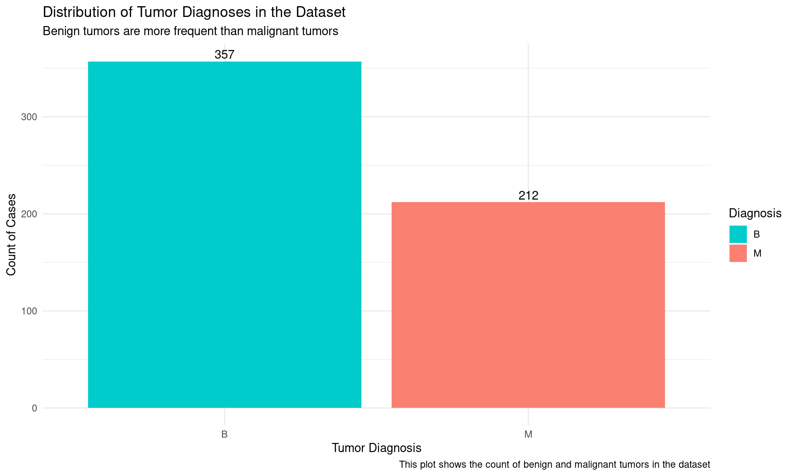
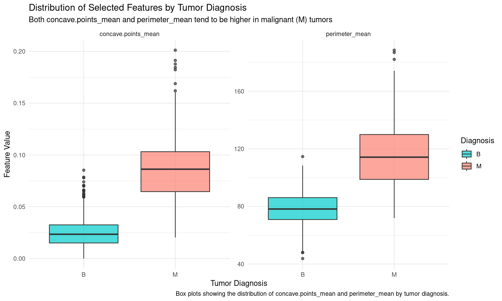
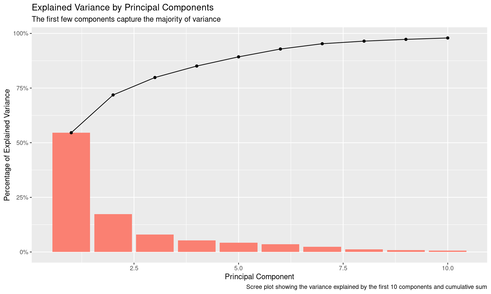

This analysis investigates the Breast Cancer Wisconsin (Diagnostic) dataset to evaluate the Random Forest method’s performance in predicting breast cancer diagnosis and identify key variables that distinguish between malignant and benign tumors.
The intended audience includes medical researchers and clinicians focused on diagnostic features that support early detection and classification of breast cancer.
The dataset, originally collected by Dr. William H. Wolberg, is available through the UCI Machine Learning Repository(Wolberg and Mangasarian 1993). The repository hosts detailed tumor measurements essential for assessing feature importance in classification tasks.
Below is an image from the Kaggle Breast Cancer Wisconsin (Diagnostic) Data Set website, representing breast cancer cells (Repository 2023).
Breast Cancer Cells
Note
This analysis highlights diagnostic features in breast cancer, offering foundational insights that may support the development of advanced machine learning models.
1.2 Data Dictionary
The data dictionary below, detailing each variable’s description and relevance to the analysis, particularly in identifying differences between benign and malignant tumor characteristics.
Variable
Description
id
Unique identifier for each patient
Diagnosis
Diagnosis of the tumor (M = malignant, B = benign)
radius_mean
Mean radius: mean of distances from center to points on the perimeter
texture_mean
Mean texture: standard deviation of gray-scale values
perimeter_mean
Mean perimeter: mean size of the core tumor perimeter
area_mean
Mean area: mean size of the core tumor area
smoothness_mean
Mean smoothness: local variation in radius lengths
compactness_mean
Mean compactness: calculated as (perimeter^2 / area - 1.0)
concavity_mean
Mean concavity: severity of concave portions of the contour
concave.points_mean
Mean concave points: number of concave portions of the contour
symmetry_mean
Mean symmetry: measure of symmetry of cell nucleus
fractal_dimension_mean
Mean fractal dimension: “coastline approximation” - 1
radius_se
Standard error of radius
texture_se
Standard error of texture
perimeter_se
Standard error of perimeter
area_se
Standard error of area
smoothness_se
Standard error of smoothness
compactness_se
Standard error of compactness
concavity_se
Standard error of concavity
concave.points_se
Standard error of concave points
symmetry_se
Standard error of symmetry
fractal_dimension_se
Standard error of fractal dimension
radius_worst
Worst or largest value of radius (mean of the three largest values)
texture_worst
Worst or largest value of texture
perimeter_worst
Worst or largest value of perimeter
area_worst
Worst or largest value of area
smoothness_worst
Worst or largest value of smoothness
compactness_worst
Worst or largest value of compactness
concavity_worst
Worst or largest value of concavity
concave.points_worst
Worst or largest value of concave points
symmetry_worst
Worst or largest value of symmetry
fractal_dimension_worst
Worst or largest value of fractal dimension
2 Exploratory Data Analysis
2.1 Data Wrangling
The data wrangling steps refine the Breast Cancer dataset for analysis.
Tip
Correlations help identify features highly associated with tumor diagnosis, aiding in feature selection for the model.
Steps:
Removed unnecessary columns (id and X) to focus on diagnostic features.
Renamed the diagnosis column to Diagnosis for clarity.
Dropped rows with missing values to ensure complete cases.
Converted the Diagnosis column into a factor with levels “B” (benign) and “M” (malignant).
Calculated correlations with the diagnosis to identify highly predictive variables, retaining only those with correlation > |0.3|.
Functions Used:
select(): Excludes specific columns and selects highly correlated variables.
rename(): Renames diagnosis to Diagnosis for consistency.
drop_na(): Removes rows with missing values.
mutate(): Creates or transforms columns, such as converting Diagnosis to a factor and creating a numeric version for correlation.
summarize() + across()**: Calculates correlation values for each feature with Diagnosis.
pivot_longer(): Reshapes the data to make correlation results easier to filter.
arrange(): Sorts correlations by their absolute values.
filter(): Selects only variables with a high correlation to the target variable.
Show code
# Load datadata <-read.csv("example_analysis_data.csv")# Data wrangling with dplyr and tidyrdata <- data %>%select(-id, -X) %>%rename(Diagnosis = diagnosis) %>%drop_na() %>%mutate(Diagnosis =factor(Diagnosis, levels =c("B", "M"))) # Calculate correlations and arrange by correlation with target variable (Diagnosis)data_numeric <- data %>%mutate(Diagnosis_num =as.numeric(Diagnosis) -1) # Converts factor levels to 0 (B) and 1 (M)correlations <- data_numeric %>%select(-Diagnosis) %>%summarize(across(-Diagnosis_num, ~cor(., data_numeric$Diagnosis_num, use ="complete.obs"))) %>%pivot_longer(cols =everything(), names_to ="variable", values_to ="correlation") %>%arrange(desc(abs(correlation)))# Print top 10 correlation variablestop_10_correlations <- correlations %>%head(10)cat("Top 10 Variables Most Correlated with Diagnosis:\n")
cor_threshold <-0.3high_corr_vars <- correlations %>%filter(abs(correlation) >= cor_threshold) %>%pull(variable)# Keep only highly correlated variables in the original datadata <- data %>%select(all_of(high_corr_vars), Diagnosis)cat("Dimensions of the Refined Dataset:\n")
Dimensions of the Refined Dataset:
Show code
dim(data)
[1] 569 24
Note
The refined dataset contains 569 rows and 24 columns, focusing on variables with significant correlations to the diagnosis. The ten variables most strongly correlated with breast cancer diagnosis are led by concave.points_worst (0.79) and perimeter_worst (0.78).
2.2 Target Variable Distribution
This bar plot shows the distribution of benign and malignant diagnoses in the dataset.
Show code
# Plot the distribution of tumor diagnosesggplot(data, aes(x = Diagnosis, fill = Diagnosis)) +geom_bar() +geom_text(stat='count', aes(label=..count..), vjust=-0.3) +labs(title ="Distribution of Tumor Diagnoses in the Dataset",subtitle ="Benign tumors are more frequent than malignant tumors",caption ="This plot shows the count of benign and malignant tumors in the dataset",x ="Tumor Diagnosis",y ="Count of Cases" ) +scale_fill_manual(values =c("B"="#00CCCC", "M"="salmon")) +theme_minimal()

Benign tumors are more common than malignant tumors, providing a slightly imbalanced but sufficient dataset for training.
2.3 Feature Distribution by Diagnosis
This box plot compares the distribution of concave.points_mean and perimeter_mean between benign and malignant tumors, both of which are highly correlated with the target variable.
Show code
# Compare the distribution of 'concave.points_mean' and 'perimeter_mean' across diagnoses using a box plotggplot(data %>%select(Diagnosis, concave.points_mean, perimeter_mean) %>%pivot_longer(cols =-Diagnosis, names_to ="Feature", values_to ="Value"), aes(x = Diagnosis, y = Value, fill = Diagnosis)) +geom_boxplot(alpha =0.7) +facet_wrap(~ Feature, scales ="free") +labs(title ="Distribution of Selected Features by Tumor Diagnosis",subtitle ="Both concave.points_mean and perimeter_mean tend to be higher in malignant (M) tumors",caption ="Box plots showing the distribution of concave.points_mean and perimeter_mean by tumor diagnosis.",x ="Tumor Diagnosis",y ="Feature Value" ) +scale_fill_manual(values =c("B"="#00CCCC", "M"="salmon")) +theme_minimal()

Both concave.points_mean and perimeter_mean are notably higher in malignant tumors, indicating their potential as diagnostic markers for identifying malignancy.
3 Modeling
3.1 Principal Component Analysis
The dataset’s dimensionality was significantly reduced using PCA, which allows the identification and removal of less relevant features without significant loss of information (Hasan and Abdulazeez 2021).
Show code
# Perform PCA for dimensionality reductionpca <-prcomp(data %>%select(-Diagnosis), scale =TRUE)# Variance explained by each componentvar_explained <-data.frame(Component =1:length(pca$sdev), Variance = (pca$sdev)^2, Proportion = (pca$sdev)^2/sum((pca$sdev)^2), Cumulative =cumsum((pca$sdev)^2/sum((pca$sdev)^2)))# Scree Plotggplot(var_explained[1:10,], aes(x = Component, y = Proportion)) +geom_bar(stat ="identity", fill ="salmon") +geom_line(color ="black") +geom_point(color ="black") +labs(title ="Explained Variance by Principal Components",subtitle ="The first few components capture the majority of variance",caption ="Scree plot showing the variance explained by the first 10 components",x ="Principal Component",y ="Percentage of Explained Variance" )

PCA helped identify six components explaining 88.76% of variance.
3.2 Data Splitting
The data was split into an 80:20 ratio for the training and test sets.
Show code
# Split the data into training and testing setsset.seed(101)split <-sample.split(data$Diagnosis, SplitRatio =0.8)train <-subset(data, split ==TRUE)test <-subset(data, split ==FALSE)
The training set has 455 samples, and the test set has 114 samples, with consistent diagnosis distribution.
3.3 Random Forest Model Training
The Random Forest method works by constructing a large number of decision trees during training and outputting the most common class (Romano, Barbul, and Korenstein 2023). A Random Forest model with 10-fold cross-validation is trained to predict tumor diagnoses based on the dataset features, using 1000 trees.
Show code
# Set up cross-validationcontrol <-trainControl(method ="cv", number =10)# Random Forestrf_model <-train(Diagnosis ~ ., data = train, method ="rf", ntree =1000, trControl = control, importance =TRUE)
3.4 Model Evaluation
Show code
# Evaluate the Random Forest model on the test setevaluate_model <-function(model, test_data) { predictions <-predict(model, newdata = test_data) cm <-confusionMatrix(predictions, test_data$Diagnosis) auc_value <-auc(roc(test_data$Diagnosis, as.numeric(predictions)))data.frame(Accuracy = cm$overall['Accuracy'],Sensitivity = cm$byClass['Sensitivity'],Specificity = cm$byClass['Specificity'],AUC = auc_value )}rf_results <-evaluate_model(rf_model, test)rf_results
Important
The model achieves high accuracy and AUC, indicating effective classification of benign and malignant cases.
4 Summary
The analysis of the Breast Cancer Wisconsin (Diagnostic) dataset revealed that features such as concave.points_worst, perimeter_worst, and concave.points_mean exhibit strong correlations with tumor diagnosis. Dimensionality reduction through PCA indicated that a few principal components account for the majority of variance, efficiently reducing feature redundancy. A Random Forest model, trained and evaluated on the dataset, achieved high accuracy and AUC, demonstrating its effectiveness in tumor classification. These findings provide essential insights into diagnostic markers, supporting potential advancements in early cancer detection and classification models.
5 Functions Used
dplyr: select, rename, filter, mutate, count, arrange, summarize, across
Hasan, Basna Mohammed Salih, and Adnan Mohsin Abdulazeez. 2021. “A Review of Principal Component Analysis Algorithm for Dimensionality Reduction.”Journal of Soft Computing and Data Mining 2 (1): 20–30.
Romano, Roni, Alexander Barbul, and Rafi Korenstein. 2023. “From Modeling Dose-Response Relationships to Improved Performance of Decision-Tree Classifiers for Predictive Toxicology of Nanomaterials.”Computational Toxicology 27: 100277.
Wolberg, William H., and Olvi L. Mangasarian. 1993. “Breast Cancer Wisconsin (Diagnostic).” UCI Machine Learning Repository.